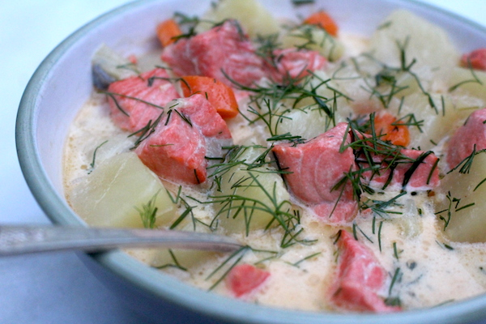

Lohikeitto
traditional Finnish salmon soup, easy to make and taste heavenly.
Ingredients
- 1/4 cup butter
- 1 pound potatoes(cubed)
- 1 carrot(sliced)
- 1 pound salmon(cut into large pieces
- 1 cup 35% cream
- salt and black pepper(to taste)
- Fresh dill(chopped)
- Heat butter in a large saucepan over medium-high heat; add leeks and cook stirring for 5-6 minutes or until leek is welted.
- Add cubed potatoes, carrot and fish stock.
- Bring to a boil and let vegetable cook for 10-15 minutes depend on the size of the vegetable.
- Add salmon and cream and simmer for 5-6 minutes, adjust seasoning.
- Sprinkle with chopped dill and serve.